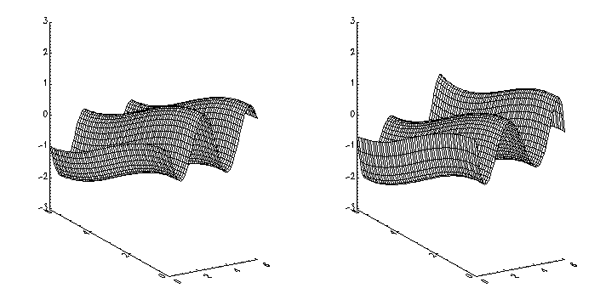

The SFIT function determines a polynomial fit to a surface and returns a fitted array. The function fitted is:
This routine is written in the IDL language. Its source code can be found in the file sfit.pro in the lib subdirectory of the IDL distribution.
Result = SFIT( Data , Degree [, / IRREGULAR , KX = variable , / MAX_DEGREE ] )
The two-dimensional array of data to fit. The sizes of the dimensions might be unequal, as indicated by the IRREGULAR keyword.
The maximum degree of fit (in one dimension).
If set, Data is a 3-by- n array containing the x , y , and z locations of n points sampled on the surface. If not set, Data is assumed to be sampled over a regular 2D grid, and should be in an n -by- n array, where the column and row subscripts implicitly contain the x and y location of the point.
Set this keyword to a named variable that will contain the array of coefficients for a polynomial function of x and y to fit data. If MAX_DEGREE is not set, this parameter is returned as a Degree +1 by Degree +1 array. If MAX_DEGREE is set, this parameter is returned as a Degree +1 by ( Degree +2)/2 element vector.
If set, Degree represents the maximum degree of the fitting polynomial of all dimensions combined, rather than the maximum degree of the polynomial in a single variable.
For example, if Degree is 2 and MAX_DEGREE is not set, then the terms returned are [[ k , y , y 2 ], [ x , xy , xy 2 ], [ x 2 , x 2 y , x 2 y 2 ]]. If MAX_DEGREE is set, the terms returned are in a vector, [ k , y , y 2 , x , xy , x 2 ], in which no terms has a power higher than two in x and y combined, and the powers of y vary the fastest.
; Create a grid from zero to six radians in the X and Y directions:
X = (FINDGEN(61)/10) # REPLICATE(1,61)
Y = TRANSPOSE(X)
; Evaluate a function at each point:
F = -SIN(2*X) + COS(Y/2)
; Compute a sixth-degree polynomial fit to the function data:
result = SFIT(F, 6)
; Display the original function on the left and the fitted function
; on the right, using identical axis scaling:
WINDOW, XSIZE = 800, YSIZE = 400
; Set up side-by-side plots:
!P.MULTI = [0, 2, 1]
DEVICE, DECOMPOSED=0
; Set background color to white:
!P.BACKGROUND = 255
; Set plot color to black:
!P.COLOR = 0
SURFACE, F, X, Y, ZRANGE = [-3, 3], ZSTYLE = 1
SURFACE, result, X, Y
The following figure shows the result of this example:
|
 |
|
Pre-4.0 |
Introduced |
CURVEFIT , GAUSSFIT , LINFIT , LMFIT , POLY_FIT , REGRESS , SVDFIT